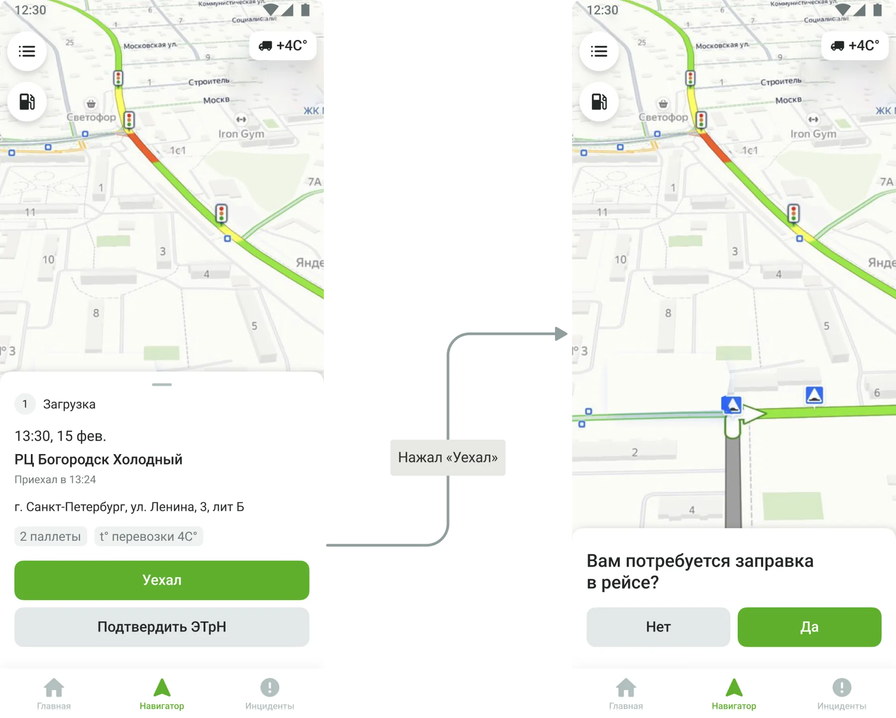
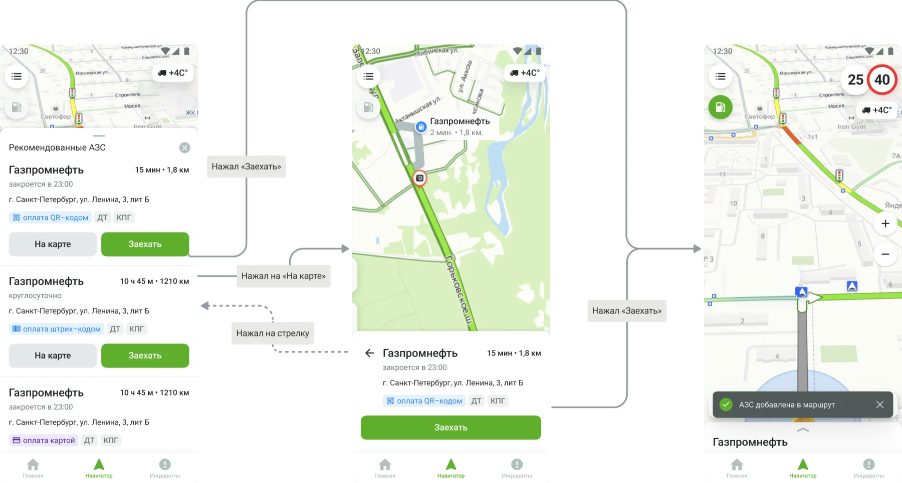
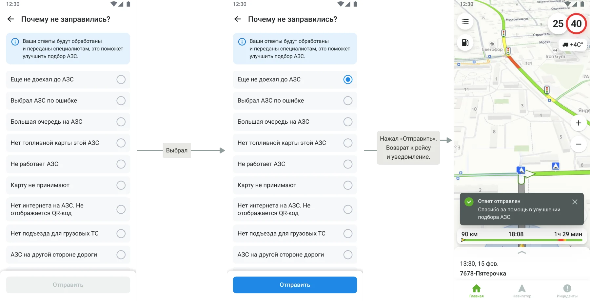
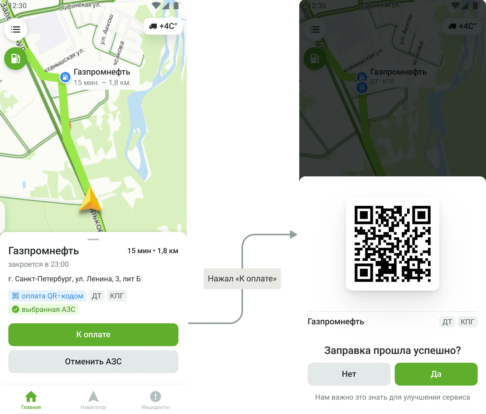
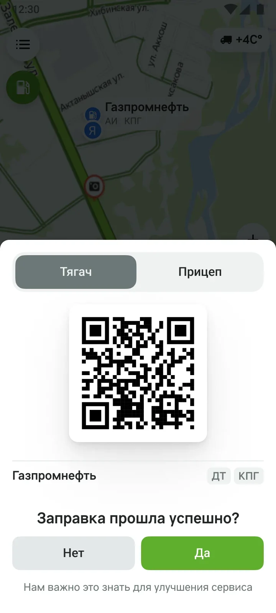
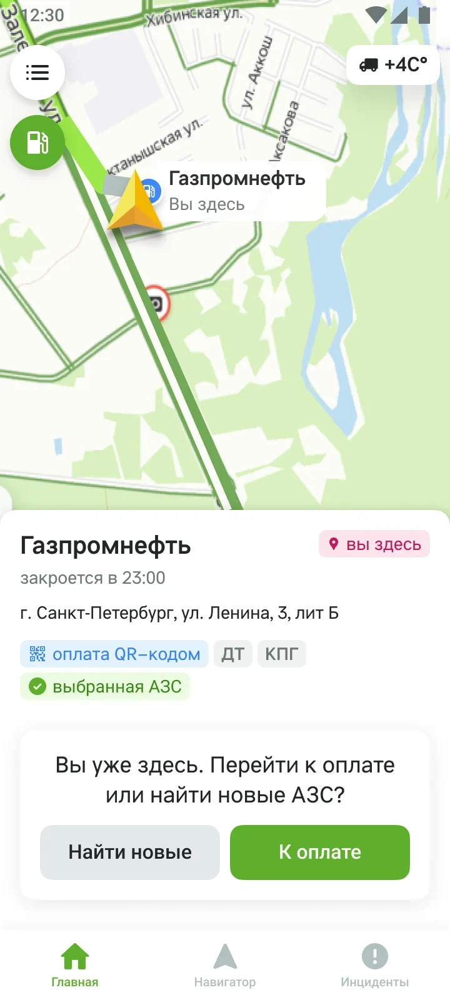
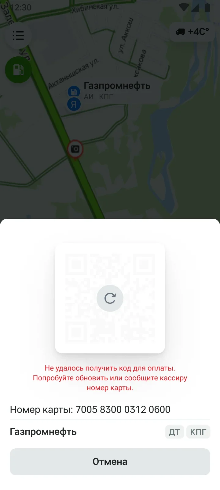
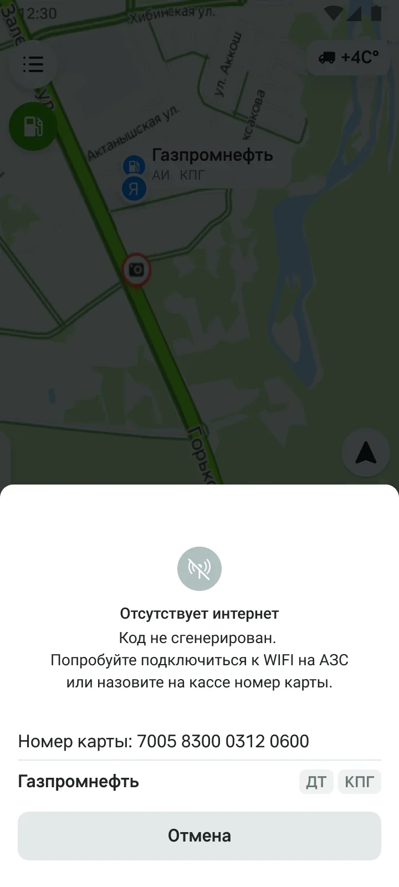

Водитель не станет подбирать заправку сам
Приложение для водителей доставки помогает пройти рейс без бумажных документов, а компании — видеть выполнение рейсов в реальном времени. Одна из целей продукта — экономия на топливе: приложение подбирает АЗС с выгодной ценой по маршруту. Моя задача — спроектировать MVP подбора и добавления рекомендованных АЗС в маршрут.
Сложность была в трёх вещах:
- Мотивация. Водители не мотивированы подбирать заправку через приложение. Значит, шаг нельзя дать пропустить, а при отказе нужно узнать причину.
- Отказ от выбранной АЗС. Если водитель выбрал заправку, но не заехал или не заправился, нужно понять почему: большая очередь, нет подъезда для грузовика. Без этого алгоритм подбора не улучшить.
- Оплата без гарантий. Заправляются по виртуальной топливной карте, по сути QR-коду. Нужно было решить, как заправиться, если пропал интернет, код не загрузился или не определилась геопозиция.
Сначала договорились, что вообще возможно
Многое в сценарии зависело от того, что умеют топливные компании и наша инфраструктура. Поэтому я начал с требований вместе с бизнесом, менеджером продукта, аналитиками и разработчиками: что делать без интернета, как быть, если водитель сделает скриншот QR-кода и заправит личную машину, и так далее.
Дальше я описал job stories, основной сценарий и альтернативные: каждую ситуацию, в которой водитель уходит с основного пути.
| Ситуация | Что делает приложение |
|---|---|
| АЗС по маршруту не нашлись | Показывает доступные топливные карты, водитель находит заправку сам и платит картой |
| Водитель приехал на АЗС, не нажав «Заехать» | Определяет заправку по геопозиции и предлагает оплату |
| Код для оплаты не считывается | Даёт запросить код повторно и показывает номер топливной карты для кассира |
| Код для оплаты не загрузился | Предлагает получить код по СМС |
| Водитель случайно ответил, что заправился | Пока водитель на АЗС, предлагает вернуться к оплате |
| Приложение закрылось или упало | Открывается на последнем экране, если прошло немного времени, иначе на экране рейса |
Ключевые решения
1. Приложение само спрашивает про заправку
Водитель не будет искать подбор АЗС в меню. Поэтому вопрос «Вам потребуется заправка в рейсе?» появляется при выезде из распределительного центра, когда водитель и так смотрит в приложение. Дальше он видит подобранные АЗС, может посмотреть подъезд на карте и одной кнопкой «Заехать» добавить заправку в маршрут.


2. Отказ от АЗС только с причиной
Если водитель отменяет выбранную заправку, он выбирает причину из списка. Список собран из реальных ситуаций в рейсе: большая очередь, нет подъезда для грузового транспорта, АЗС на другой стороне дороги, карту не принимают, не работает QR-код. Это одна короткая форма для водителя и данные, без которых алгоритм подбора не улучшить. На тесте водители подтвердили, что причин в списке хватает. А ситуации из их рассказов в нём уже есть.

3. Оплата без лишних действий
Если приложение определило, что водитель на выбранной АЗС, код для оплаты открывается сам. Если геопозиция не определилась, код открывается кнопкой «К оплате». QR-код генерирует топливная компания, он обновляется каждые 5 минут. После оплаты приложение спрашивает, прошла ли заправка успешно.

4. Реальные ограничения заправки в интерфейсе
У тягача и прицепа разные квоты топлива, поэтому для машины с прицепом в окне оплаты появляется переключатель «Тягач / Прицеп». На некоторых АЗС есть лимит топлива на одну заправку, поэтому водитель может вернуться к оплате ещё раз или найти другие заправки дальше по маршруту.
«За один раз практически не получится нигде заправиться»
5. Оплата, даже если пропала связь
Если код не сгенерировался, пропал интернет или сотовая связь, приложение всё равно показывает номер топливной карты, который можно назвать кассиру, и предлагает подключиться к Wi-Fi на АЗС.




Компромисс: первая версия без навигатора
Встроенный навигатор в приложении ещё разрабатывался. Чтобы не ждать его, первую версию сделали с кнопкой «Открыть в навигаторе», которая предлагала выбрать навигационное приложение. Параллельно я проработал версию со встроенным навигатором и добавлением АЗС прямо в маршрут, её экраны в этом кейсе.
Что поменялось после теста с водителями
Прототип мы проверили с 6 водителями: подбор, заезд на АЗС, оплату и ситуации, когда что-то идёт не так. Основной путь водители поняли. Главное выяснилось из их рассказов о том, как они заправляются на самом деле.
Выводы
Немотивированного пользователя важно спросить в нужный момент. Подбор АЗС работает, потому что приложение спрашивает о заправке при выезде из распределительного центра, а не ждёт, что водитель сам начнёт её искать.
Пограничные случаи важнее основного сценария. Самые сложные решения в кейсе касаются того, что идёт не так: нет связи, код не считывается, лимит на заправку, прицеп с отдельной квотой. Это подтвердил и тест. Основной путь водители поняли, а трудности из их рассказов касались сбоев.